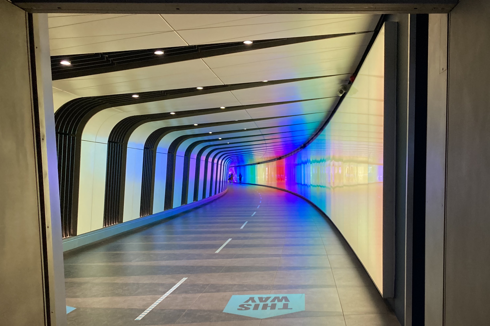

<!DOCTYPE html>
<html lang=""en>
    <head>
        <link rel="stylesheet" href="style.css"/>
        <title>Liz Dowling - Interests</title>
    </head>
</html>
<body>
    <nav>
        <ul>
            <li><a href="index.html">Home</a></li>
            <li><strong>Interests</strong></li>
            <li><a href="contact.html">Contact Liz</a></li>
        </ul>
    </nav>

    <section id="jumpTo">
        <a href="#travel">Travel</a>
        <a href="#musicEtc">Music etc</a>
    </section>

    <a href="https://open.spotify.com/track/4Fx3LVYQXplhz70cfoqbgq?si=45e5efe146df4db5"></a>


    <h2 id="travel">Travel</h2>
    <p id="bulkText">Liz has done her fair share of travel, but as I'm sure many fellow explorers will agree it's never enough. Before moving to the states she did a whistlestop tour of six European countries, starting in Italy exploring Rome, stopping at the Trevi Fountain mostly for the Lizzie McGuire Movie throwback, doing her best mountain goat impression in Budapest (trust me, Google it), scoffing marzipan in Vienna, throwing down at a punk show in Berlin and winding down in Amsterdam with just a backpack for company.
        <br> Since moving to the USA she has visited six states and with her husband as hiking partner plans to tick off many more in the years to come.
    </p>

    <h2 id="musicEtc">Music, books and the arts</h2>
    <p id="bulkText">A huge music fan, she would rather be at a show than anything else, but with the universe having other plans she has resorted to absorbing music documentaries at an exorbitant rate and digging the far corners of the internet to find exciting new artists and genres (if you haven't, please check out <a href="https://www.youtube.com/watch?v=wCUx9nOt9u8">Bardcore</a> before the day is out)
    <br>For no fathomable reason Liz has a fascination with all things medieval, in particular illuminated manuscripts, but keeps herself firmly planted in this century with digital comics and visits to The Met</p>


    <section id="funStuff">
            
        <h2>Currently on repeat</h2>
        <ol id="currentMusic">
            <li>The American Way - Proper.</li>
            <li>Me & My Dog - Julien Baker</li>
            <li>Make Me Feel - Janelle Monae</li>
            <li>Satellite of Love - Lou Reed</li>
            <li>Coconuts - Kim Petras</li>
        </ol>

    </section>

    <section id="contact">
        <div>
            <a href="https://github.com/dowlingec"> &#x1F431; GitHub</a>
        </div>
        <div>
            <a href="mailto:dowlinge94@gmail.com"> &#128231; E-mail</a>
        </div>
        <div>
            <a href="tel:+447542419898"> &#x1F4DE; Call</a>
        </div>
    </section>
</body>